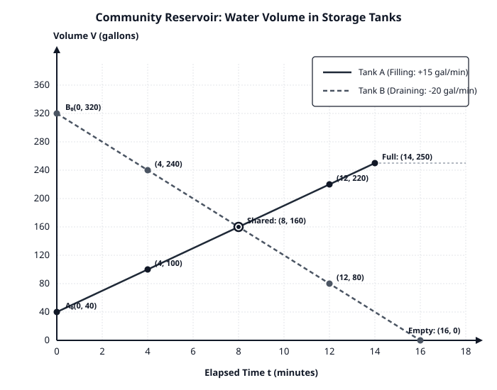
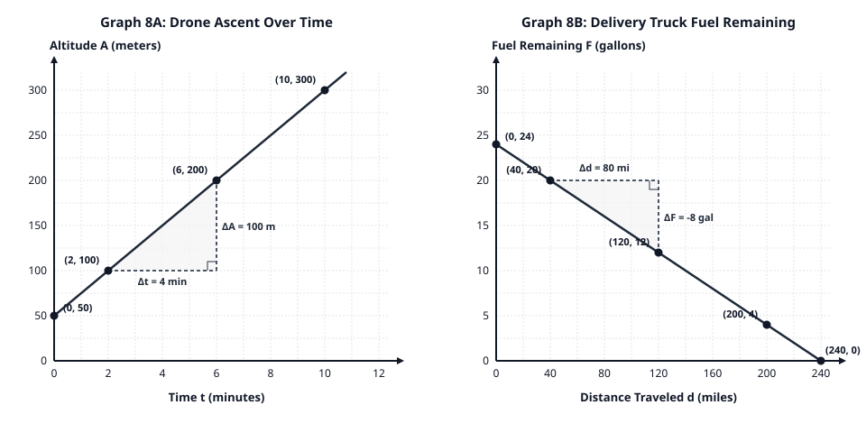

Research candidate · 20260915T022559Z-unit · Rendering preserves the original content. This preview is not classroom or print acceptance.
Grade 8 Mathematics — Student Task Materials
Unit 5: Linear Functions and Contextual Modeling
Continuous Three-Lesson Sequence: Lessons 6, 7, and 8
Lesson 6: Constructing Linear Functions from Irregular Tables
Name: ____________________________________ Date: ____________ Class Period: _________
Task ID: TASK-6.1 — Launch: Notice and Wonder with Two Tables
Examine Table 1 and Table 2 below. Both tables represent linear relationships.
| Table 1: Plan A |
|
| Input (x) |
Output (y) |
| 0 |
5 |
| 1 |
9 |
| 2 |
13 |
| 3 |
17 |
| Table 2: Plan B |
|
| Input (x) |
Output (y) |
| 2 |
11 |
| 5 |
23 |
| 8 |
35 |
| 14 |
59 |
Calculate the Differences:
Examine Table 2:
- Look at the step from the first row (2,11) to the second row (5,23).
Change in x: \Delta x = \text{______}
Change in y: \Delta y = \text{______}
- Look at the step from the third row (8,35) to the fourth row (14,59).
Change in x: \Delta x = \text{______}
Change in y: \Delta y = \text{______}
- Jordan looks at Table 2 and says: "The outputs jump by 12, and then by 24, so this table cannot be linear."
Do you agree or disagree with Jordan? Explain why, using the ratio ΔxΔy.
Task ID: TASK-6.2 — Core Activity: Determining Rate of Change and Extrapolating the Initial Value
Calculate the Unit Rate of Change (m) for Table 2:
- Compute the rate of change ΔxΔy for each of the three intervals in Table 2:
- Interval 1 (from x=2 to x=5):
\frac{\Delta y}{\Delta x} = \frac{\phantom{00000000}}{\phantom{00000000}} = \text{______}
- Interval 2 (from x=5 to x=8):
\frac{\Delta y}{\Delta x} = \frac{\phantom{00000000}}{\phantom{00000000}} = \text{______}
- Interval 3 (from x=8 to x=14):
\frac{\Delta y}{\Delta x} = \frac{\phantom{00000000}}{\phantom{00000000}} = \text{______}
- Is the rate of change constant? What is the value of m?
m = \text{______}
Finding the Initial Value (b):
Verification:
- Test your equation using the last point (14,59). Substitute x=14 into your equation. Does it give y=59? Show your work.
Task ID: TASK-6.3 — Partner Practice: A Decreasing Relationship
The table below records the remaining volume of water W (in gallons) in a small cooling tank after running for t minutes.
| Elapsed Time t (minutes) |
Remaining Water W (gallons) |
| 4 |
156 |
| 9 |
126 |
| 15 |
90 |
| 22 |
48 |
- Compute the rate of change ΔtΔW between (4,156) and (9,126). Include correct units.
- Compute the rate of change ΔtΔW between (15,90) and (22,48). Include correct units.
- Why is the rate of change negative? What does the negative sign mean in this real-world context?
- Determine the initial water volume in the tank before the machine started (t=0). Show your method:
\text{Initial Volume } b = \text{______ gallons}
- Write the equation relating W and t:
W = \text{________________________}
- How many minutes will it take for the tank to be completely empty (W=0)? Show your equation solving steps.
Task ID: CFU-6 — Independent Check for Understanding (Exit Ticket 6)
A repair technician charges a fixed home-visit diagnostic fee plus a constant hourly labor rate. The table shows the total charge C (dollars) for jobs taking h hours:
| Labor Time h (hours) |
Total Charge C (dollars) |
| 4 |
$57 |
| 9 |
$102 |
| 15 |
$156 |
- Calculate the technician's hourly labor rate (m=ΔhΔC). Show your calculation:
m = \text{______ dollars per hour}
- Calculate the fixed home-visit fee (b). Show how you found it:
b = \$\text{______}
- Write the linear equation representing total cost C in terms of hours h:
C = \text{________________________}
- If a repair job takes 8 hours, what will the total charge be? Total =
\$\text{______}
Task ID: EXT-6 — Extension Task (Optional Challenge)
A linear table has the following entries, but two numbers were smudged and are unreadable:
| x |
3 |
7 |
12 |
? |
| y |
19 |
? |
64 |
89 |
- Find the rate of change m and the initial value b.
- Determine the two missing smudged values.
Task ID: PRAC-6 — Independent Practice Problems (Lesson 6)
A linear function contains the points (5,65) and (15,145).
- Find the constant rate of change m.
- Find the initial value b.
- Write the function rule: y=mx+b.
- Find the output when x=25.
A storage battery discharges power at a constant rate. At t=6 hours of use, the remaining battery charge is 74%. At t=14 hours of use, the remaining battery charge is 42%.
- Find the hourly discharge rate (include negative sign and units).
- What was the battery percentage at t=0?
- Write an equation for remaining charge P in terms of hours t.
- At what hour will the battery be completely dead (P=0%)?
---
Lesson 7: Contextual Modeling: Filling and Draining Systems
Name: ____________________________________ Date: ____________ Class Period: _________
Task ID: TASK-7.1 — Launch: Two Tanks, Two Stories
A community water authority manages two large storage reservoirs, Tank A and Tank B. Both tanks operate on steady, constant-rate pump systems:
- Tank A begins the morning with some water already stored and has water pumped into it at a constant rate.
- Tank B begins the morning full of water and is drained to supply community irrigation at a constant rate.
The coordinate graph below displays the water volume V (in gallons) in each tank over time t (in minutes).
(Refer to Figure 7.1: lesson7_reservoir_models.svg printed below or projected on the front board)

Task ID: TASK-7.2 — Core Modeling Lab: Tank A and Tank B
Use the graph in Figure 7.1 and the marked coordinate points to answer the questions for each tank.
Part 1: Tank A (The Filling Tank — Solid Line)
Identify the Initial Volume:
Determine the Filling Rate (Slope mA):
- Two marked points on Tank A's line are (4,100) and (12,220).
- Compute the elapsed time:
\Delta t = 12 - 4 = \text{______ minutes}.
- Compute the volume increase:
\Delta V = 220 - 100 = \text{______ gallons}.
- Compute the rate of change:
m_A = \frac{\Delta V}{\Delta t} = \frac{\phantom{00000000}}{\phantom{00000000}} = \text{______ gallons per minute}
- Write a complete sentence interpreting what this rate means:
Construct the Linear Function for Tank A:
Part 2: Tank B (The Draining Tank — Dashed Line)
Identify the Initial Volume:
Determine the Draining Rate (Slope mB):
- Two marked points on Tank B's line are (4,240) and (12,80).
- Compute the elapsed time:
\Delta t = 12 - 4 = \text{______ minutes}.
- Compute the volume change:
\Delta V = 80 - 240 = \text{______ gallons}.
- Compute the rate of change:
m_B = \frac{\Delta V}{\Delta t} = \frac{\phantom{00000000}}{\phantom{00000000}} = \text{______ gallons per minute}
- Why is this rate negative? What does the negative sign indicate?
Construct the Linear Function for Tank B:
Task ID: TASK-7.3 — Realistic Constraints and Intersection Analysis
Maximum Capacity of Tank A:
Emptying of Tank B:
The Shared Point (Point of Intersection):
- Locate the marked shared point where the two lines cross on the graph: (8,160).
- What does the x-coordinate (t=8) represent in this situation?
- What does the y-coordinate (V=160) represent in this situation?
- Verify that this point satisfies both equations:
Task ID: CFU-7 — Independent Check for Understanding (Exit Ticket 7)
A municipal filtration pool containing 450 gallons of water is being drained through a drainage valve for cleaning.
- At time t=5 minutes, the remaining water is 330 gallons.
- At time t=12 minutes, the remaining water is 162 gallons.
- Find the constant draining rate (rate of change) in gallons per minute. Include appropriate sign and units:
\text{Rate of change } m = \text{________________________}
- State the initial volume b before draining started:
b = \text{______ gallons}
- Write an equation modeling remaining volume V as a function of minutes t:
V = \text{________________________}
- At what exact minute will the pool be completely empty? Show your calculation:
t = \text{______ minutes}
Task ID: EXT-7 — Extension Task (Optional Challenge)
Suppose the operators wanted Tank A and Tank B to finish (Tank A reaching 250 gallons and Tank B reaching 0 gallons) at the exact same minute.
- Tank A still starts at 40 gallons and reaches 250 gallons in 14 minutes.
- If Tank B starts at 320 gallons, what draining rate (in gallons per minute) should the operators set so Tank B empties in exactly 14 minutes?
Task ID: PRAC-7 — Independent Practice Problems (Lesson 7)
A hot-air balloon is descending toward a landing field.
- At t=3 minutes into the descent, its altitude is 580 meters.
- At t=8 minutes into the descent, its altitude is 380 meters.
- Assuming a constant rate of descent, determine the rate of change (meters per minute).
- Determine the altitude of the balloon before the descent began (t=0).
- Write an equation for altitude A in terms of time t.
- How many total minutes will the descent take from start until touching the ground (A=0)?
An insulated thermal container holds soup at an initial temperature of 190∘F. When placed in a refrigerator, the soup cools at a steady rate of 2.5∘F per minute for the first 40 minutes.
- Write an equation modeling temperature T after m minutes.
- What is the temperature of the soup after 24 minutes?
- If the target serving temperature is 115∘F, after how many minutes should the container be removed?
---
Lesson 8: Constructing Linear Functions from Scaled Coordinate Graphs
Name: ____________________________________ Date: ____________ Class Period: _________
Task ID: TASK-8.1 — Launch: The "Counting Squares" Trap
Look at the small sketch below:
- A student looks at a line on a grid and counts: "It goes up 2 grid squares and right 1 grid square, so the slope must be 12=2."
- Then the student notices the horizontal axis is labeled in hours (0,5,10,15…) and the vertical axis is labeled in miles (0,50,100,150…).
- Why is counting grid boxes dangerous when coordinate axes have different scales? How should the student find the true rate of change?
Task ID: TASK-8.2 — Core Investigation: Reading Scaled Coordinate Graphs
Examine Figure 8.1, which displays two different real-world linear functions on scaled coordinate planes.
(Refer to Figure 8.1: lesson8_scaled_graphs.svg printed below or projected on the front board)

Part 1: Graph 8A — Drone Ascent Over Time
Identify the Axes and Grid Scales:
- What quantity and unit are on the horizontal axis (x)? ________________________
- What does each single vertical grid line represent on the horizontal axis? ______ minute(s)
- What quantity and unit are on the vertical axis (y)? ________________________
- What does each single horizontal grid line represent on the vertical axis? ______ meter(s)
Identify the Initial Value (b):
- What are the coordinates of the point where the line crosses the vertical axis?
(0, \text{______})
- What was the drone's altitude at time t=0 minutes?
b = \text{______ meters}
- What does this mean about where the drone was launched from?
Determine the Rate of Change using the Slope Triangle:
Construct the Equation:
Part 2: Graph 8B — Delivery Truck Fuel Remaining
Identify the Axes and Grid Scales:
- Horizontal axis quantity and unit: ________________________
- Each vertical grid line on the horizontal axis represents: ______ miles
- Vertical axis quantity and unit: ________________________
- Each horizontal grid line on the vertical axis represents: ______ gallons
Identify the Initial Value (b):
Determine the Rate of Change using the Slope Triangle:
Construct the Equation and Find the Intercept:
Task ID: CFU-8 — Independent Check for Understanding (Exit Ticket 8)
The coordinate graph below describes the depth of snow S (in inches) accumulating on a mountain pass over time t (in hours) during a winter storm.
Snow Depth S (inches)
36 | *(12, 36)
30 |
24 | *(8, 26)
18 |
12 | *(4, 16)
6 | *(0, 6)
0 +----+----+----+----+----+----+----+----+
0 2 4 6 8 10 12 14 16 Time t (hours)
- Identify the initial snow depth b (with units):
b = \text{________________________}
- Choose two labeled points to compute the rate of snowfall (m=ΔtΔS). Show your work:
m = \text{________________________}
- Write the linear function equation modeling snow depth S after t hours:
S = \text{________________________}
- If the storm continues at this exact same rate, what will the snow depth be after 15 hours?
\text{Depth after 15 hours} = \text{______ inches}
Task ID: EXT-8 — Extension Task (Optional Challenge)
On Graph 8B (Delivery Truck Fuel), a driver wants to know the truck's fuel economy in miles per gallon (mpg) instead of gallons per mile.
- How can you use the rate of change −0.1 gallons per mile to find how many miles the truck travels on 1 full gallon of fuel?
- If the driver adds an auxiliary 15-gallon tank (so total starting fuel is 39 gallons), sketch how the graph would change. Does the slope change? Does the intercept change?
Task ID: PRAC-8 — Independent Practice Problems (Lesson 8)
A coordinate graph shows the total cost C (in dollars) of producing custom school t-shirts based on the number of shirts printed n.
- The vertical axis (C) has grid lines spaced by $50. The horizontal axis (n) has grid lines spaced by 10 shirts.
- The line crosses the vertical axis at (0,75).
- A second clean grid intersection occurs at (20,235).
- Find the setup fee (b) and the cost per printed shirt (m).
- Write the function equation: C=mn+b.
- What is the total cost to print 80 shirts?
A hiker is walking down a canyon trail. A graph of elevation E (feet above river) vs. walking time t (minutes) passes through (15,720) and (45,360).
- Find the hiker's rate of descent in feet per minute.
- Find the hiker's elevation at the trailhead (t=0).
- Write the equation for E in terms of t.
- When will the hiker reach the canyon river (E=0)?